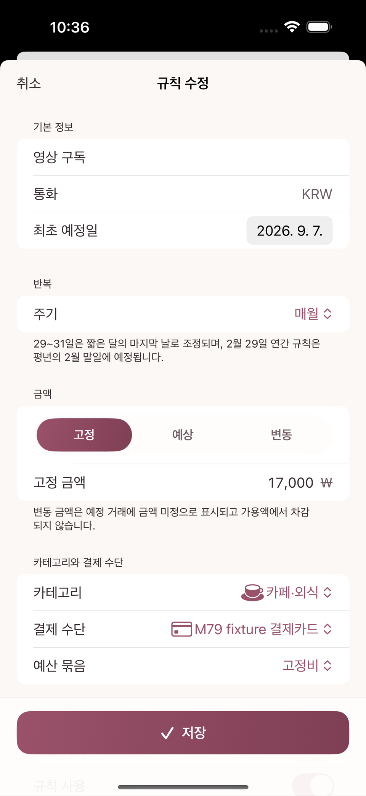
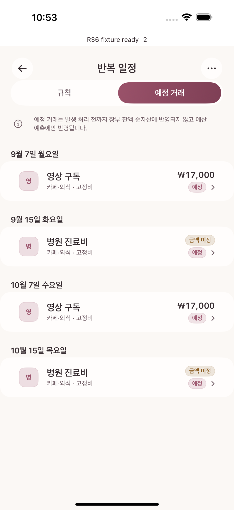

반복 규칙은 매달 되풀이되는 지출(구독료, 공과금, 정기 진료비 등)을 미리 등록해두고 예정 거래를 자동으로 만들어주는 기능이다. 이 장이 끝나면 다음 세 역할의 차이를 분명히 구분할 수 있어야 한다.
카테고리 = 지출의 성격을 정한다 (무엇에 썼나)
예산 묶음 = 어느 한도에서 차감할지 정한다 (얼마까지 쓸까)
반복 규칙 = 위 값들을 기본 적용해 예정 거래를 미리 만든다 (재원을 배정하지는 않는다)반복 규칙 화면은 설정의 반복 규칙 행에서 들어간다. 화면 안에는 규칙 세그먼트와 예정 거래 세그먼트가 있어 규칙 목록과 예정 거래 목록을 오갈 수 있다.
고정비 묶음(9월 배정 200,000원)을 사용한다.구독/멤버십, 결제수단 신용카드.의료비, 결제수단 신용카드.규칙 추가 화면에서 이름, 금액(또는 "금액 미정"), 반복 주기(매월 며칠), 카테고리, 결제수단을 지정한다. 규칙 자체는 재원을 배정하지 않는다 — 카테고리와 결제수단을 다음 예정건에 기본으로 채워 넣을 뿐이다.

규칙을 저장하면 다음 예정 거래가 자동으로 생긴다.
| 예정 거래 | 날짜 | 금액 | 예산 화면에 미치는 영향 |
|---|---|---|---|
| 영상 구독 | 9월 7일 | 17,000원 | 고정비 묶음의 남은 예정액에서 17,000원을 미리 차감해 보여줌 |
| 병원 진료비 | 9월 15일 | 미정 | 예정 건수만 표시, 금액을 임의로 계산하지 않음 |

이 시점에서 고정비 묶음의 화면은 다음처럼 보인다.
배정 200,000원 − 실제 사용 0원 − 남은 예정액 17,000원 = 남은 금액 183,000원(예정 반영)중요한 점: 예정 거래는 아직 계좌 잔액이나 지출 통계를 바꾸지 않는다. 예산 화면의 "남은 금액"만 미리 줄여서 "이 돈은 곧 나갈 예정이니 다른 데 쓰면 안 된다"는 계획 신호를 보여줄 뿐이다.
9월 7일이 되어 실제로 결제되면 예정 거래를 눌러 발생 확인 화면을 열고 기록을 눌러 실제 거래로 전환한다.
고정비 묶음의 사용액이 17,000원 늘고, 같은 금액만큼 있던 남은 예정액은 사라진다.기록 후: 배정 200,000원 − 실제 사용 17,000원 − 남은 예정액 0원 = 남은 금액 183,000원기록 전후로 남은 금액이 똑같이 183,000원이라는 점을 확인한다 — 예정액과 실제 사용액을 동시에 더해 이중으로 차감하지 않는다는 뜻이다.
다음 달, 영상 구독 결제일이 7일에서 29일로 바뀌었다고 하자. 규칙 편집 화면에서 반복일을 29일로 수정하면:
병원 진료비처럼 매번 금액이 안 맞는 예정건을 그냥 두면 처리되지 않은 예정 상태로 계속 남는다. 예정건 하나하나를 사용자가 직접 "건너뜀"으로 표시하는 버튼이나 스와이프 동작은 없다 — "건너뜀"은 오직 규칙을 삭제할 때만 나타나는 자동 상태 라벨이다. 그 규칙에 이미 발생시켰거나 건너뛴 이력이 있어 규칙 자체는 보관하기로 판정되면, 그 시점까지 남아 있던 미처리 예정건들이 함께 건너뜀으로 정리된다.
규칙을 당장 그만 쓰고 싶지만 지우고 싶지는 않다면 규칙 편집 화면의 규칙 사용 스위치를 꺼서 비활성화한다 — 이때는 새 예정건 생성만 멈추고, 이미 만들어진 예정건은 건너뜀 처리되지 않은 채 그대로 남는다. 아예 삭제하려면 같은 화면의 삭제를 누른다. 발생·건너뜀 이력이 전혀 없는 규칙은 규칙과 미처리 예정건이 함께 지워지고, 이력이 있는 규칙은 규칙 자체는 보관되고 남아 있던 미처리 예정건만 건너뜀으로 정리된다(과거 실제 거래는 항상 보존).
| 상황 | 카테고리 | 예산 묶음 | 반복 규칙 |
|---|---|---|---|
| 이 지출은 뭐였나 | 구독/멤버십이 답한다 | — | — |
| 얼마까지 써도 되나 | — | 고정비 배정 200,000원이 답한다 | — |
| 다음 결제가 언제·얼마인가 | — | — | 규칙이 예정 거래로 미리 알려준다 |
세 축 중 하나만 봐서는 전체 그림이 보이지 않는다. 반복 규칙은 미리 알려주는 역할만 하고, 실제 예산 반영은 발생 처리가 일어난 뒤에 확정된다는 점을 기억한다.